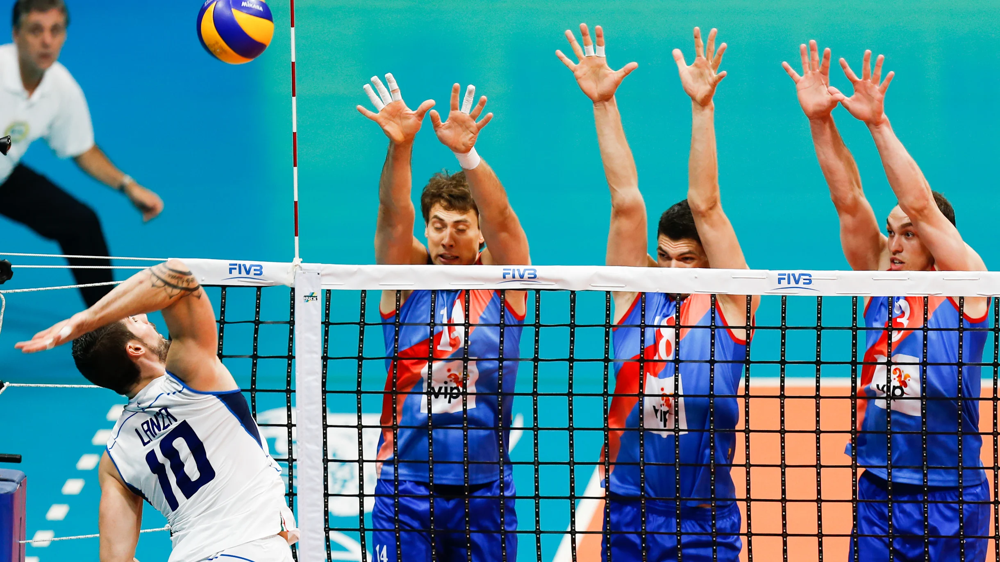

Basic Rules in Volleyball
- There are six players on court in a volleyball team, who each must rotate one position clockwise every time their team wins back service from the opposition. Only the three players at the net positions can jump and spike or block near the net. The backcourt players can only hit the ball over the net if they jump from behind the attack line, also known as the three-metre line, which separates the front and back part of the court.
-
- Volleyball has developed into a very specialised sport. Most teams will include in their starting line-up a setter, two centre blockers, two receiver-hitters and a universal spiker. Only certain players will be involved with service reception. Players will also have specialist positions for attack and defence. Substitutions are allowed during the game.
-
- Teams scored a point on every rally (Rally Point System), regardless of which team served.
-

- Matches are played best of five sets. The first four sets are played to 25 points, with the final set being played to 15 points. A team must win a set by two points.
-
- The libero wears a different coloured uniform from the rest of the team and can be substituted in backcourt for any player on the team. The libero cannot serve, spike the ball over the net or rotate into the front-line positions, but plays a vital role for the team in serve reception and backcourt defence. There must be at least one point played between a libero substituting off for a player and going back on the court for another player – hence he/she cannot be on the court for the whole game.